During my 10-week internship at Goinvo, I helped build Ipsos Facto, an internal research Chat-GPT for Ipsos. In phase 1, our team designed and launched 6 features and a design system; I led the design of the prompt library, from research to implementation, enabling researchers to more efficiently leverage AI and access company resources.
Ipsos Facto has quickly become a success, with 51% of the workforce adopting it and 200,000+ prompts generated in just the first month. The prompt library feature I designed gives researchers easy access to curated prompts and helps them integrate AI more seamlessly into their daily workflows—directly fueling the growth in prompt usage across the company.
End to end Phase 1 software design in 2 month
Claire Lin
Daniel Reeves
Mandy Liu
Ipsos team
Research
Design system
Core feature
Ipsos Group is a multinational market research and consulting firm. To facilitate their researchers with better ai help, they decided to create a “ safter Chat GPT” version for their researchers
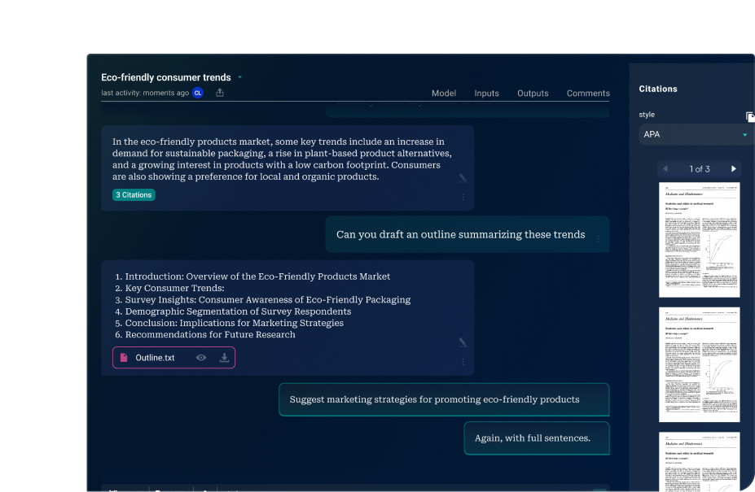
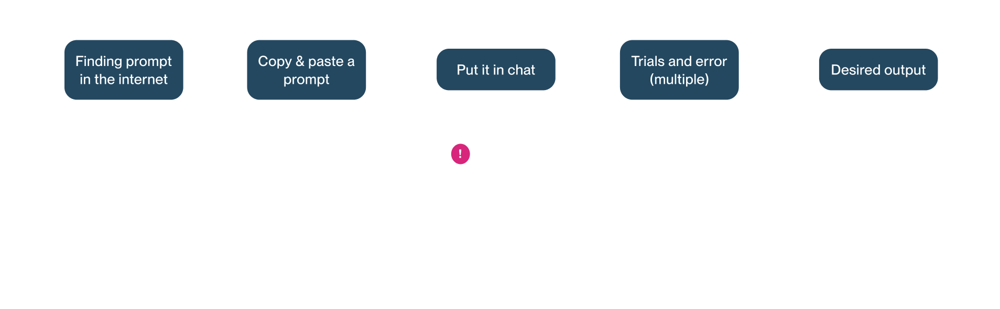
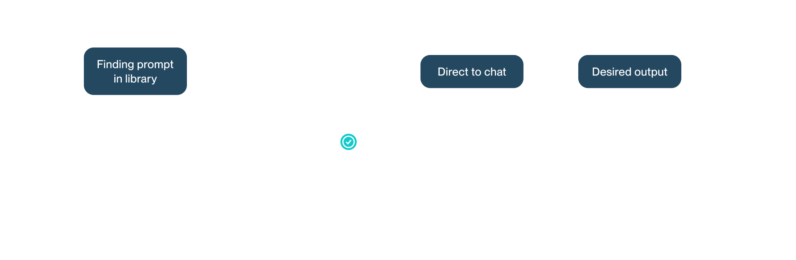
I find it very crucial to have a approachable prompt gallery, both for the client to encourage researchers to use their prompt and for researchers to use prompts.

With start suggestion base on the user’s question and sector they are in. Facto will suggest potential prompt usage to make users aware of this capability.

“We want to make the users use our tailored “Ipsos prompt” on our company’s website.
We’ve been hosting workshop on AI-Prompt usage, how it can help the workflow, but still people using facto are not aware of the power of promps
Since we are building an internal tool, knowing the day to day workflow of our future users are crucial. We recruited our target end-users for research studies. Collect a total of 120+ surveys and conduct 5 in-depth 1 on 1 interviews.
Our research indicates that researchers struggle to leverage conversational AI effectively to enhance workflow efficiency. They seek minimal effort for optimal results within tight timelines, aiming to utilize prompts to tailor chat sessions towards their desired outcomes.
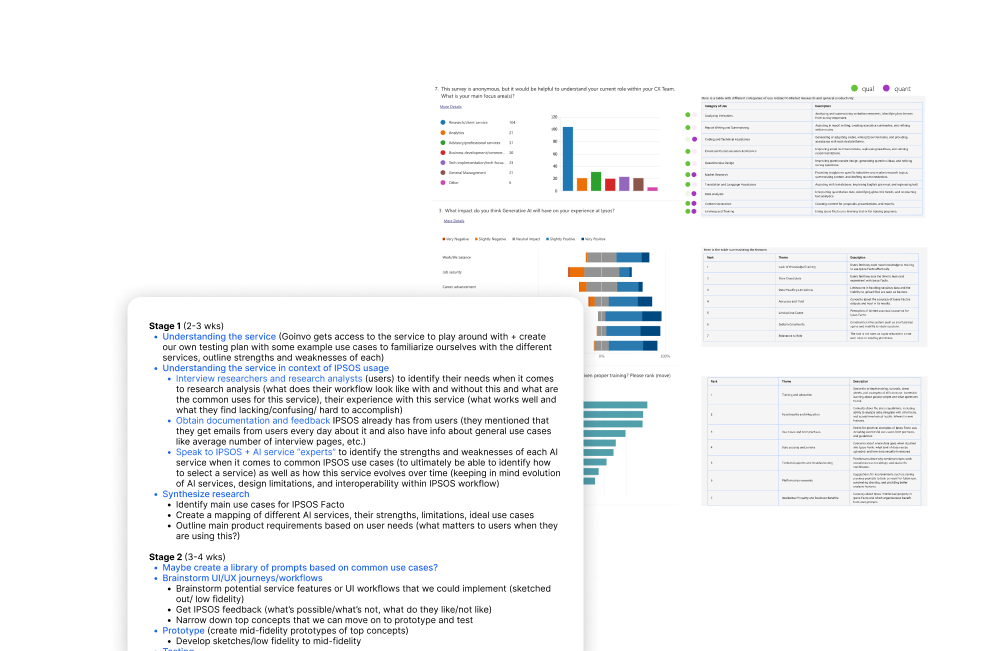
“Finding a prompt you want is the biggest painpoint, a lot of effort is wasted on doing so.”
“We often find better prompt shared among our teams, but mostly we search them passively. ”
Researchers are not aware of companies’ prompt resource, thus, is using gen ai in a struggling way
Increase user prompt usage + company's resource awareness
Reduce the effort in searching for a prompt
Making AI prompting approachable
Designing a gallery space that have Ipsos’s official prompt and community prompt at the same place
Out client Ipsos wants their a place to showcase their AI prompting resource
Having an embedded prompt gallery will make prompt searching much easier
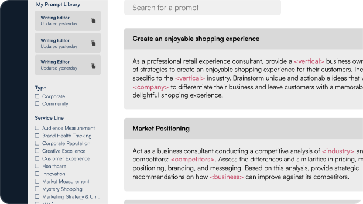
Researchers comes from various fields, product lines and is looking for different topics, having all information in an exemplified way is crucial for them to browse fast.
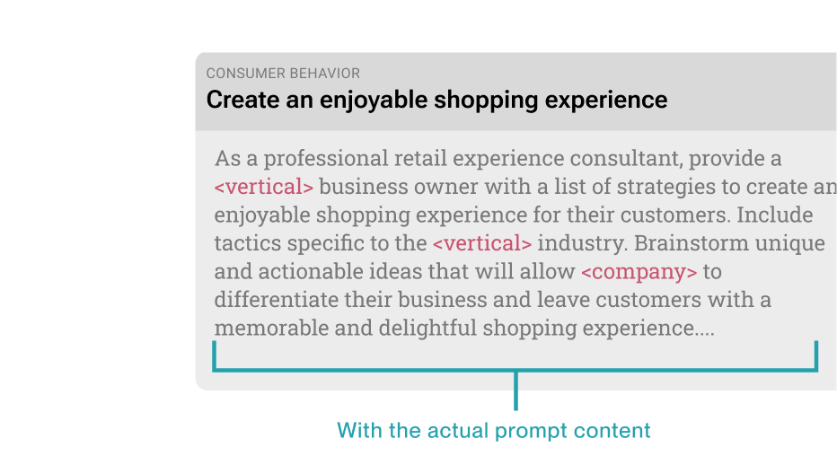
Users’ wantOriginally, I plan to design each prompt card with an inline style, showing the exact prompt to the users for them to paste it in chat.
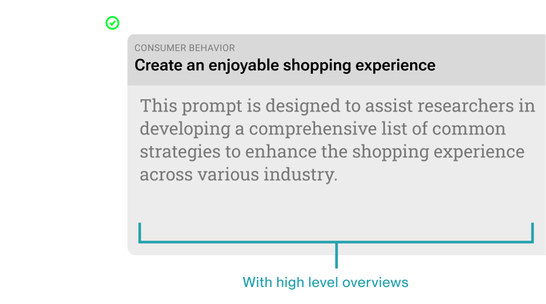
Users’ wantHowever, after a client review, I was noticed that not all prompts are as short as paragraph and can be openly seen by the others, some involes pages and confidential IPs
Here’s a diagram of how I transform use cases and information into each little component on the research card
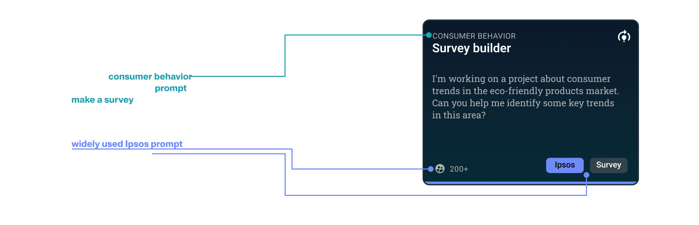
We are creating layers of complex information for our users to find the perfect AI-Prompt in their mind fast. After the design of the componenet its cruicial to balancing how much information they in-take in each step of their decision making.
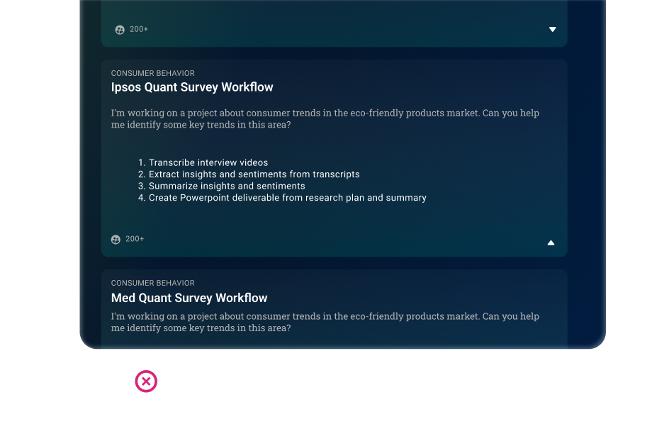
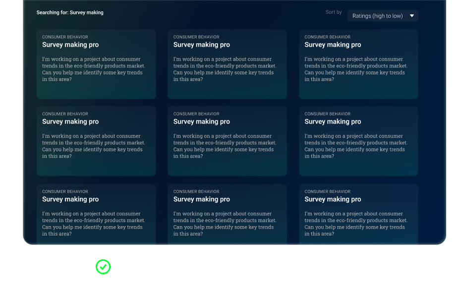
To make this design decision, we have to learn more on the existing Ipsos’s prompt quantity. Ipsos already have 3-4 dozens tailored prompt, and is expecting each service line to have plenty. We decided to move on to Block (ver.2) with an additional page.
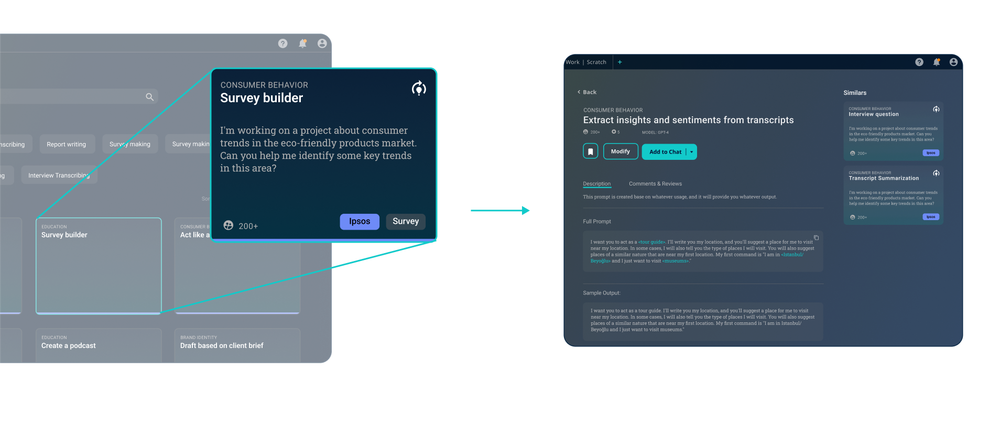
Just like a shopping experience, the thumbnail for a prompt only contain information you need to browser fast. Once you find something you are interested in, you will be able to see more details in a subsequent page and its sample response
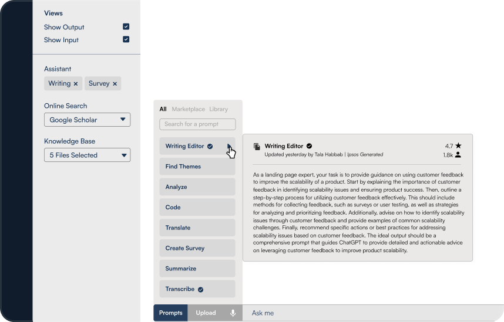
Targeting painpoint: finding a prompt from no where is intimidating for our user. Giving the ability to start a chat with suggested prompt, rather than start writing one from 0.
Make our workers and research realize they can use prompt library to use Gen AI better
Make company’s prompt resource more visible, encourage user to use of prompts
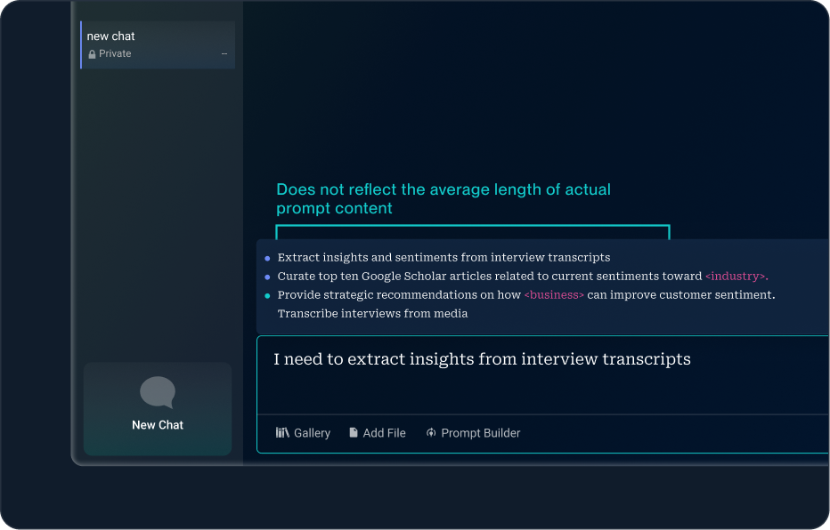
Tried a version of smart suggestion with limited words, realizing the content themselves are not authentic to real prompt length
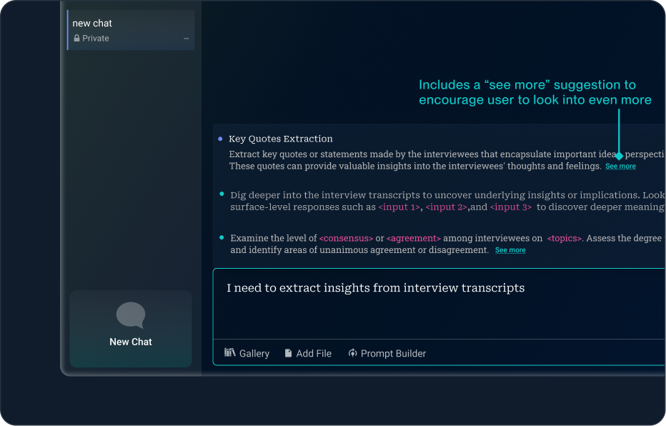
After making an a more authentic prompt suggestion experience, I also added a link for each suggested prompt to give user the freedom to look even further to make their decision
We tested out concept with our user individually. Observing their reaction and write down their positive reaction, skepticism, negative reaction, and desire in a compiled table.
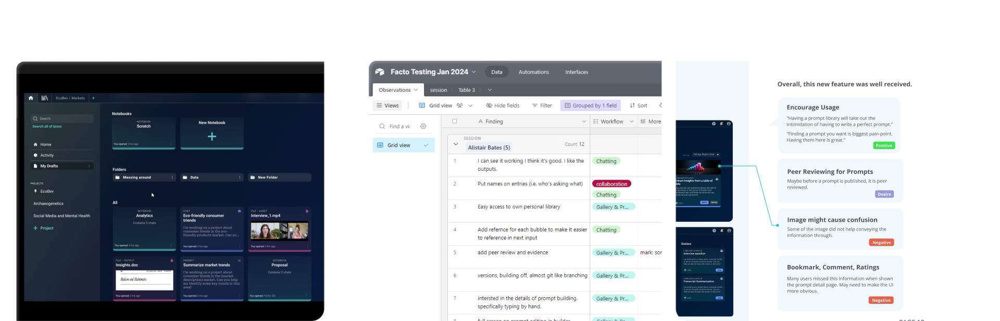
“Having a prompt library will take out the intimidation of having to write a perfect prompt.”
“Finding a prompt you want is biggest pain-point. Having them here is great.”
After the testing session, we receive a feedback on the clarity of “suggested prompt from start flow. Some user mistaken the suggestion pop up as a typing suggestion instead of prompt suggestion
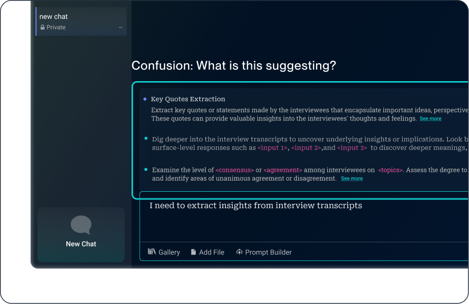
Before, the prompt behaves in a pattern that is less look our prompt library. User has confusion on this being a prompt
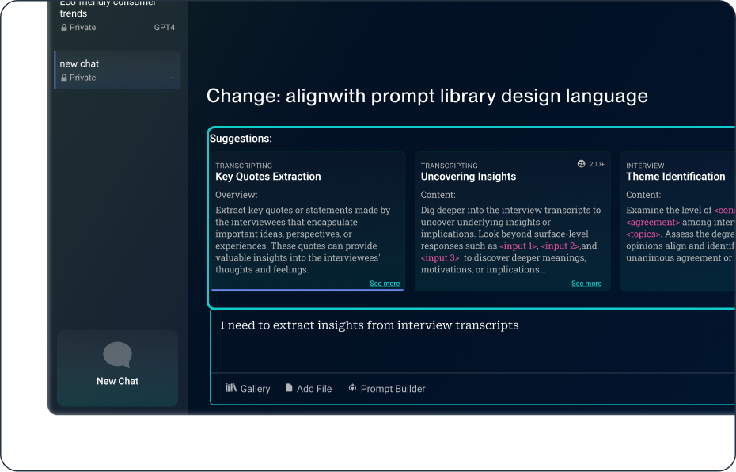
We adapt our style from the prompt library. Making an immediate distinction between text and prompt.
As our client is more certain about their vision, we can start designing a version for a more production ready stage. What's more successful than securing more busineness for your agency.
After the usability testing session, my researchers (users) gain strong interest in testing out prompts, since prompt usage has never been easier than this.
From our client side, its usually the engineers/ manager/ researcherPresentations are extra important when it comes to presenting, we need to show changes and progress step by step, to make sure it wil not be overwhelming
In a fast paced design sprint, designers need to have clean delegation within a team, and build a healthy / consistent mode of feedback loop
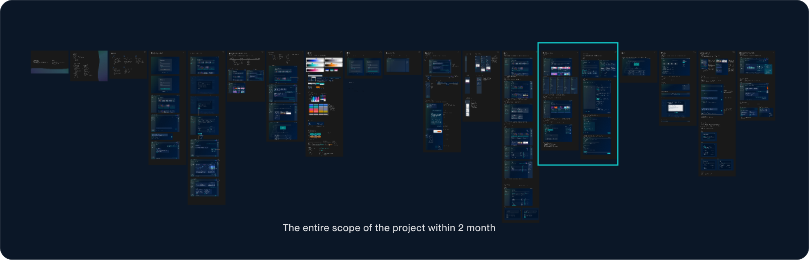